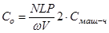
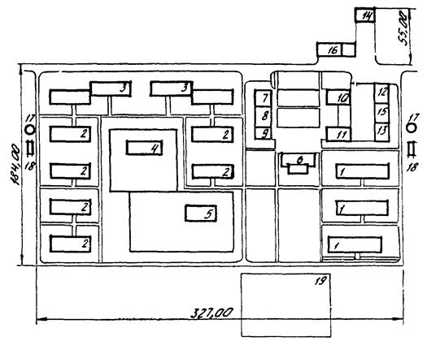
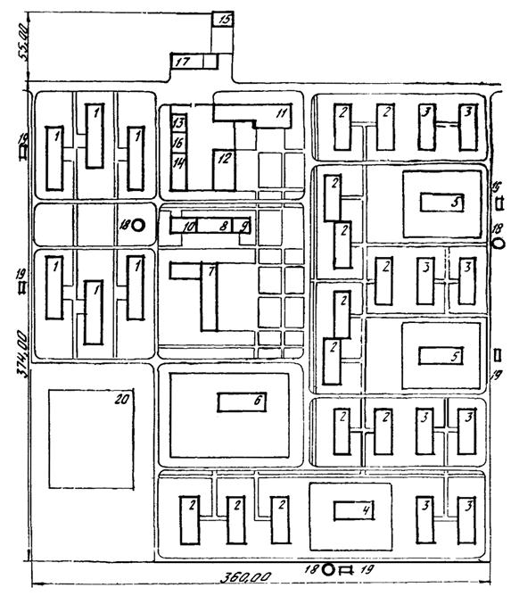
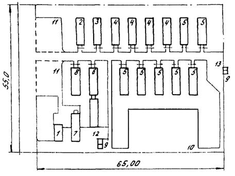
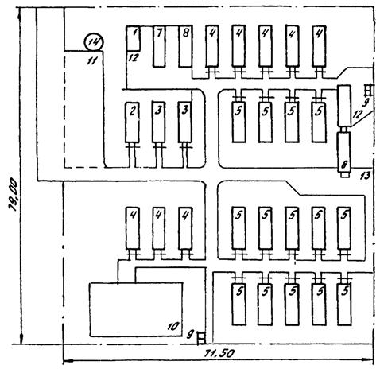
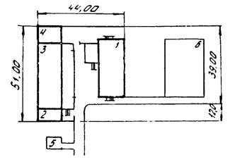
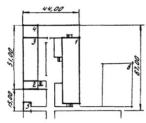
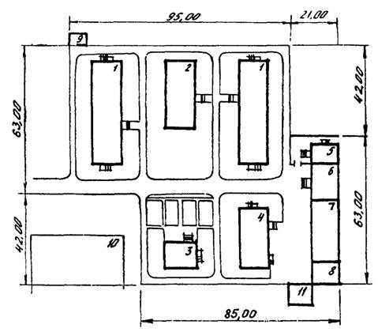

МИНИСТЕРСТВО ТРАНСПОРТНОГО СТРОИТЕЛЬСТВА
ВЕДОМСТВЕННЫЕ
СТРОИТЕЛЬНЫЕ НОРМЫ
ПРОЕКТИРОВАНИЕ И СТРОИТЕЛЬСТВО
ВРЕМЕННЫХ ПОСЕЛКОВ
ТРАНСПОРТНЫХ СТРОИТЕЛЕЙ
ВСН 199-84
Минтрансстрой
МОСКВА 1985
Разработаны отделением транспортных зданий Всесоюзного научно-исследовательского института транспортного строительства (ЦНИИС) при участии отдела типового проектирования Государственного проектно-изыскательского института «Гипропромтрансстрой», специального конструкторско-технологического бюро Главбамстроя (СКТБ Главбамстроя) и Всесоюзного научно-исследовательского института железнодорожной гигиены Главсанупра МПС (ВНИИЖГ) на основе научных исследований, изучения и обобщения опыта проектирования, строительства и эксплуатации временных поселков транспортных строителей.
Авторы: инж. М. С. Собченко (руководитель), кандидаты техн. наук К. И. Хабибулин, И. Б. Каспэ, А. Н. Черемисова, инженеры Н. К. Куракина, Г. Н. Балакина (ЦНИИС); инж. В. А. Одиноков (Гипропромтрансстрой); кандидаты медицин. наук О. И. Грибанов, Л. А. Кожинова (ВНИИЖГ МПС); канд. техн. наук Я. Д. Пекер (СКТБ Главбамстроя). В разработке отдельных положений Норм принимали участие инженеры А. В. Осмоловский, С. П. Петров (Гипропромтрансстрой); канд. медицин, наук А. М. Ратнер (ВНИИЖГ).
Внесены Всесоюзным научно-исследовательским институтом транспортного строительства.
Подготовлены к утверждению Отделом научно-исследовательских работ Главного технического управления Министерства транспортного строительства.
Согласованы:
с Госстроем СССР 25.05.84, № ДП-2518-1;
с Центральным комитетом профсоюза рабочих железнодорожного транспорта и транспортного строительства 10.09.82, № 2/48-1538;
с Главным санитарным врачом железнодорожного транспорта 22.12.82, № ЦУВСС-6;
с Главным управлением пожарной охраны Министерства внутренних дел СССР 15.10.82, № 7/6/3729;
с Государственным комитетом СССР по гидрометеорологии и контролю природной среды от 09.09.82;
с Главным управлением землепользования и землеустройства Министерства сельского хозяйства от 16.07.82;
с Министерством мелиорации и водного хозяйства СССР от 26.08.82;
с Главным управлением проектно-изыскательских работ «Главтранспроект» Министерства транспортного строительства от 30.11.82;
с Главным управлением по строительству Байкало-Амурской железнодорожной магистрали от 15.09.83.
|
Министерство транспортного строительства (Минтрансстрой) |
Ведомственные строительные нормы |
ВСН 199-84 |
|
Проектирование и строительство временных поселков транспортных строителей |
Минтрансстрой |
|
|
Вновь |
1.1. Настоящие Нормы распространяются на проектирование и строительство временных поселков транспортных строителей, а также их эксплуатацию в различных природно-климатических районах страны.
Примечание. Временный поселок транспортных строителей - это населенный пункт, создаваемый при строительстве транспортных объектов, особенность которого заключается в ограничении сроков функционирования на одном месте в связи с передислокацией производственных подразделений, размещаемых в поселке.
1.2. Выбор площадки под застройку поселка и полигона для обезвреживания бытовых отходов производится комиссией, состав которой определяется в соответствии с «Инструкцией о составе, порядке разработки, согласования и утверждения проектно-сметной документации на строительство предприятий, зданий и сооружений». В состав комиссии должны входить представители организаций, для которых предназначается поселок, генподрядчика, заказчика, проектной организации, органов землеустройства, местных Советов народных депутатов, профсоюзной отраслевой организации, местных органов санитарного и пожарного надзора, бассейновой и рыбной инспекции.
1.3. В случае одновременного размещения на одной строительной площадке (например, в районе одного остановочного пункта) нескольких строительных подразделений для них должен предусматриваться объединенный временный поселок. При этом учреждения обслуживания следует объединять. Производственная зона объединенного поселка также должна быть единой. Организация работы комиссии по выбору площадки, подготовка всех необходимых документов для строительства объединенных временных поселков осуществляется генподрядчиком.
|
Внесены |
Утверждены |
Срок введения в действие - |
Ответственность за проектирование и строительство объединенных временных поселков возлагается на генподрядчика.
1.4. При проектировании и строительстве временных поселков наряду с положениями настоящих Норм необходимо также руководствоваться требованиями соответствующих нормативных документов (приложение 1, обязательное).
2.1. В зависимости от назначения, размеров, места расположения и расчетных сроков эксплуатации в одном пункте временные поселки транспортных строителей подразделяются на базовые и вахтовые (притрассовые жилищно-производственные комплексы).
2.2. Базовые поселки предназначены для работников и членов их семей одного или нескольких производственных подразделений и должны быть рассчитаны на проживание 500 и более человек. Время пребывания производственных подразделений в базовом поселке определяется проектом организации строительства участка железной дороги (объекта). Общий расчетный срок существования такого поселка на одном месте не менее 3 лет.
В состав базового поселка входит комплекс жилых и общественных мобильных зданий. Поселок должен быть обеспечен комплексом инженерного оборудования (отоплением, водоснабжением, канализацией, электроснабжением, радио, местной телефонной связью и, по возможности, телевещанием).
Базовые поселки на железнодорожных новостройках следует размещать в соответствии с проектом организации строительства железной дороги, как правило, на железнодорожных станциях в увязке с местоположением проектируемых и существующих населенных пунктов и с учетом вахтового метода производства работ.
В проектах базовых поселков необходимо предусматривать (в целях сокращения объемов временного строительства) использование для нужд строителей возводимых постоянных зданий и сооружений инженерного обеспечения: артезианских скважин, насосных станций, очистных сооружений, котельных, электростанций, ЛЭП и др., а также зданий общественного и жилого назначения.
Для работников и членов их семей специализированных организаций (мосто-, тоннелестроительных, по производству земляных работ) в некоторых случаях при объектах создают базовые поселки вблизи (в пределах пешеходной доступности) строящихся крупных сооружений (большие и средние мосты, тоннели, карьеры стройматериалов, подсобные производственные предприятия и т.п.). Срок существования на одном месте таких поселков определяется временем строительства (эксплуатации) объекта.
2.3. Вахтовые поселки следует размещать непосредственно у возводимого объекта и предназначаются для кратковременного (до 1,5 лет) проживания работников (без членов их семей) прорабских или бригадных участков. Место расположения и сроки существования поселков определяются проектом организации строительства и уточняются при разработке проектов производства работ.
Применение вахтовых поселков должно предусматриваться при технико-экономическом обосновании вахтового метода производства работ (сопоставление затрат на вахтовый метод и ежедневную доставку работников к месту производства работ).
Организация работ вахтовым методом и доставка работников от места нахождения подразделения к вахтовому поселку определяются в соответствии с «Положением о вахтовом методе организации работ в Минтрансстрое».
В общем виде условием организации работ по вахтовому методу является сопоставление общих затрат при этом методе SС с затратами по ежедневной доставке работников SСо, т.е. выполнение неравенства
SС £ SСо. (1)
Общие затраты, связанные с производством работ по вахтовому методу, включают в себя помимо затрат на устройство вахтового поселка С1 также и затраты на смену работников на вахте Со и эксплуатационные затраты по обслуживанию вахтового поселка Э по формуле
С = С1 + С1о + Э. (2)
Затраты Со на доставку к месту работ N работников на расстояние L, км, в течение какого-либо промежутка времени Р, рабочих дней, следует определять по формуле

где w - вместимость транспортного средства, чел.;
V - скорость движения транспортного средства, км/ч;
Смаш.-ч - стоимость 1 маш.-ч транспортного средства, руб.
2.4. Территория поселка должна отвечать следующим требованиям:
уклон рельефа местности должен быть не более 10 %;
уровень грунтовых вод, как правило, не должен препятствовать возведению фундаментов и прокладке инженерных сетей без проведения дополнительных работ (водопонижения);
не должно быть заболоченности, оврагов, оползней и активного карста;
участки не должны затапливаться паводковыми водами (повторяемость уровня высоких вод 1 раз в 100 лет).
2.5. Инженерно-геологические условия участка поселка должны обеспечивать возможность применения простейших способов прокладки инженерных сетей и строительство зданий и сооружений без устройства сложных оснований.
2.6. При определении пригодности территории под застройку поселков в районах, подверженных землетрясениям, следует руководствоваться Нормами по строительству в сейсмических районах.
2.7. Не допускается размещение базовых поселков:
в первом и втором поясах зоны санитарной охраны источников водоснабжения;
в санитарно-защитных и специальных зонах промышленных предприятий;
на участках, расположенных в зонах воздействия селевых потоков, снежных лавин, камнепада и осыпей;
на подрабатываемых территориях;
на участках, загрязненных органическими отбросами.
2.8. При размещении временных поселков строителей в труднодоступных районах при каждом поселке следует предусматривать посадочные площадки для вертолетов и автодорожные подъезды к ним.
3.1. Расчет объемов строительства жилых и общественных зданий в поселках производится по общей численности их населения, определяемого в зависимости от численности градообразующей группы населения (численности работников основных производственных подразделений, размещаемых во временном поселке).
Расчетная численность населения базовых поселков определяется умножением численности N градообразующей группы населения на коэффициент перехода от штатной численности работников к населению Кп, определяемый по формуле
Кп = (1 + К1 + К2)К3, (4)
где К1 и К2 - коэффициенты, учитывающие удельное значение работников вспомогательных хозяйств К1 и сферы обслуживания К2 по отношению к численности работников основных производственных подразделений;
К3 - коэффициент, учитывающий долю несамодеятельной группы населения.
Значения коэффициентов К1, К2 и К3 приведены в табл. 1.
Таблица 1
|
Значения коэффициентов |
||
|
К1 + К2 |
К3 |
|
|
До 1000 чел. (при N = 250¸500 чел.) |
0,20-0,22 |
1,48-1,54 |
|
От 1000 до 1600 чел. (при N = 500¸700 чел.) |
0,22-0,24 |
1,54-1,70 |
|
Свыше 1500 чел. (при N = 700 чел.) |
0,24-0,26 |
1,70-1,88 |
Примечания. 1. Значения коэффициентов в указанных пределах зависят от видов строительных организаций района строительства. Нижний предел - для базовых поселков специализированных строительных организаций, верхний - для базовых поселков общестроительных организаций, объединенных базовых поселков, а также поселков специализированных организаций, размещающихся в районах Казахстана и Средней Азии.
2. При определении общей численности населения объединенного поселка для нескольких строительных организаций значения коэффициентов К1 и К2 уточняются по данным генподрядчика.
3.2. Потребность в жилых домах квартирного типа, общежитиях и детских учреждениях необходимо предусматривать с учетом демографического состава населения базовых поселков по данным табл. 2.
3.3. Расселение контингента населения следует осуществлять: одиноких - в общежитиях, семейных - в домах гостиничного и квартирного типов.
Размер жилой площади на одного человека следует принимать: для семейных - 9 м2, для одиноких - 6 м2 (при размещении в мобильных зданиях контейнерного типа в вахтовых поселках допускается сокращение площади жилых комнат, исходя из нормы 4,5 м2, при соответственном увеличении площади комнаты отдыха).
3.4. Для определения состава и вместимости мобильных зданий общественного назначения в поселках следует принимать расчетные нормативы (на 1000 чел.) по табл. 3.
Таблица 2
|
Единица измерения |
Значения показателей для районов |
|||
|
Европейской части СССР (кроме Севера) |
Севера Европейской части СССР и Сибири |
Казахстана и Средней Азии |
||
|
Доля одиноких работников в общей численности населения в поселках: |
% |
|||
|
до 150 чел. (вахтовых) |
80 |
80 |
80 |
|
|
до 1000 чел. |
30 |
40 |
25 |
|
|
от 1000 до 1500 чел. |
25-30 |
35-40 |
20-25 |
|
|
свыше 1500 чел. |
20-25 |
30-35 |
15-20 |
|
|
Соотношение семей по составу (из общего количества семейных, проживающих в поселках): |
» |
|||
|
из двух человек |
20 |
20-25 |
15-20 |
|
|
из трех человек |
45-50 |
50 |
35-40 |
|
|
из четырех и более человек |
30-35 |
25-30 |
40-50 |
|
|
Количество детей дошкольного возраста в общей численности населения в поселках: |
Детей на 1000 жителей |
|||
|
до 500 чел. |
90 |
70 |
100-120 |
|
|
от 500 до 1000 чел. |
90-110 |
70-90 |
120-140 |
|
|
от 1000 до 2000 чел. |
110-140 |
90-100 |
140-160 |
|
|
свыше 2000 чел. |
140-160 |
100-130 |
160-180 |
|
|
Количество детей школьного возраста (1-4 классы) в общей численности населения в поселках: |
То же |
|||
|
до 500 чел. |
70 |
60 |
90 |
|
|
от 500 до 1000 чел. |
70-100 |
60-80 |
90-110 |
|
|
Количество детей школьного возраста (1-8 классы) в общей численности населения в поселках: |
» |
|||
|
до 1000 чел. |
100 |
80 |
120 |
|
|
от 1000 до 2000 чел. |
130-140 |
120-130 |
140-150 |
|
|
свыше 2000 чел. |
140-160 |
130-150 |
150-180 |
|
|
Количество детей школьного возраста (1-10 классы) в общей численности населения в поселках: |
» |
|||
|
до 2000 чел. |
140-160 |
130-150 |
150-180 |
|
|
свыше 2000 чел. |
160 |
150 |
200 |
|
Примечание. Демографические характеристики населения уточняются при проектировании поселков.
Таблица 3
|
Единица измерения |
Расчетные нормативы для поселков, чел. |
|||||
|
вахтовых |
базовых |
|||||
|
до 500 |
свыше 500 до 1000 |
свыше 1000 до 2000 |
свыше 2000 |
|||
|
Здания общественного назначения |
||||||
|
Предприятия общественного питания |
мест в зале м2 |
400 1800 |
100 550 |
80 450 |
75 420 |
70 400 |
|
Магазины: |
раб. мест м2 (м2 в торговом зале) |
|||||
|
смешанной торговли |
- |
6,5 360(180) |
- |
- |
- |
|
|
продовольственные |
- |
- |
3,2 180(84) |
4,0 210(105) |
3,2 180(84) |
|
|
овощи-фрукты |
- |
- |
- |
- |
1 85(42) |
|
|
промтоварные (одежда, трикотаж, обувь, ткани) |
- |
- |
2,4 170(84) |
2,4 170(84) |
2,4 170(84) |
|
|
промтоварные (культурно-хозяйственные товары и галантерея) товары для детей |
- |
- |
- |
1 85(42) |
1 85(42) |
|
|
- |
- |
- |
- |
1 85(42) |
||
|
Предприятия бытового обслуживания: |
раб. мест м2 |
|||||
|
комбинат бытового обслуживания |
- |
- |
- |
8 105 |
10 131 |
|
|
комплексный приемный пункт |
То же |
- |
2 25 |
4 50 |
- |
|
|
Баня |
мест м2 |
60 225 |
40 150 |
25 95 |
16 60 |
10 40 |
|
Прачечная |
кг белья в смену м2 |
220 65 |
220 65 |
220 65 |
220 65 |
220 65 |
|
Здравпункт или изолятор |
коек (посещений в смену) м2 |
20-40 240 |
14-20(40) 135 |
3-12(40) 80 |
- |
- |
|
Больница (стационар) |
коек м2 |
- |
- |
- |
10 135 |
10 135 |
|
Поликлиника |
посещений в смену м2 |
- |
- |
- |
30 90 |
30 90 |
|
Клуб, кинотеатр |
мест в зрительном зале м2 |
- |
240 520 |
180-200 450 |
130-150 330 |
100-120 250 |
|
Красный уголок, кабинет по технике безопасности |
То же |
400 750 |
- |
- |
- |
- |
|
Библиотека |
тыс. томов м2 |
- |
6 50 |
6 50 |
6 50 |
6 50 |
|
Спортивные залы |
м2 |
- |
- |
280 |
200 |
200 |
|
Детские дошкольные учреждения |
мест м2 |
- |
70-90 450 |
90-120 590 |
120-150 760 |
150-170 900 |
|
Школы |
ученических мест м2 |
- |
100-110 360 |
110-130 410 |
130-150 480 |
150-180 570 |
|
Поселковый совет, отделение связи, сберкасса |
м2 |
- |
60 |
60 |
50-60 |
50-60 |
|
Пожарное депо |
количество пожарных автомашин* м2 |
- |
1 40-50 |
1 40-50 |
2 80 |
2 80 |
|
Подсобно-вспомогательные и складские здания |
||||||
|
Хлебопекарня |
т хлеба в сутки м2 |
- |
0,5-0,6 140 |
0,5-0,6 140 |
0,5-0,6 140 |
0,5-0,6 140 |
|
Овощехранилище |
т м2 |
- |
150 375 |
100 250 |
100 250 |
100 250 |
|
Холодильники |
т м2 |
- |
- |
50 220 |
50 220 |
40 200 |
|
Склады: |
м2 |
|||||
|
продовольственных товаров (теплый) |
- |
200 |
225 |
225 |
230 |
|
|
промтоваров |
- |
500 |
500 |
540 |
550 |
|
|
тары и оборудования |
- |
100 |
100 |
100 |
110 |
|
___________
* На поселок.
4.1. Для застройки временных поселков следует применять инвентарные здания промышленного изготовления, конструктивные характеристики которых (тип и исполнение) должны соответствовать размерам и срокам эксплуатации поселков, а также климатическим условиям районов строительства.
4.2. В начальный период развития базовых и приобъектных поселков, а также в вахтовых поселках со сроком эксплуатации до 1,5 лет следует применять здания контейнерного типа (по ГОСТ 25957-83). Для застройки вахтовых поселков, население которых составляет более 50 чел., а срок эксплуатации превышает 1 год, целесообразно применять также здания сборно-разборного типа, преимущественно состоящие из блок-контейнеров.
При выборе типа зданий жилого назначения для базовых поселков предпочтение следует отдавать домам, состоящим из блок-контейнеров.
Перечень наиболее распространенных мобильных зданий приведен в справочном приложении 2.
4.3. Состав мобильных зданий и сооружений для базовых поселков с численностью проживающих от 500 до 2000 чел. приведен в рекомендуемом приложении 3, а для вахтовых поселков с численностью проживающих 25-150 чел. - в рекомендуемом приложении 4.
5.1. На всех этапах проектирования временных поселков: при выборе площадок под строительство, функциональном и строительном зонировании, размещении жилых групп и общественного центра, построении внутрипоселковой и внешней дорожной сети и др., - следует учитывать влияние природно-климатических, экономических и социальных условий района строительства.
5.2. При проектировании поселков следует применять компактные, линейные и линейно-расчлененные планировочные структуры.
Компактные планировочные структуры возможны при благоприятных рельефных и инженерных условиях площадки.
Линейные и линейно-расчлененные планировочные структуры наиболее характерны для поселков на железнодорожных новостройках, проходящих в горных районах. При этом линейно-расчлененные структуры следует применять при необходимости создания санитарно-защитных зон и при сложных территориально-планировочных условиях.
Располагать поселки следует по одну сторону железной дороги, притрассовой автодороги или постоянного водотока.
5.3. Состав функциональных зон и их взаимное размещение необходимо принимать в соответствии с назначением и вместимостью поселка, а также его положением в системе расселения. Для временных поселков следует выделять (как отдельные) основные функциональные зоны: жилая зона с объектами обслуживания и отдыха; складская, производственная и внешнего транспорта.
5.4. Размещение функциональных зон и планировочную организацию территории поселков необходимо производить на основе природно-климатического микрозонирования строительной площадки. При этом районирование территории СССР и климатические параметры района строительства следует учитывать по СНиП 2.01.01-82.
5.5. В районах распространения вечномерзлых грунтов функциональное зонирование должно производиться на основе геокриологического изучения площадки. Под застройку необходимо отводить в первую очередь участки со скальными и дренирующими грунтами.
Для предотвращения заболачивания и образования маревых болот предпочтение при выборе площадок для строительства поселка следует отдавать участкам с уклонами не менее 3 %.
5.6. При размещении поселков в снегозаносимых районах здания следует размещать так, чтобы ветровые потоки от одних зданий не способствовали снегозаносимости других.
5.7. Поселки, расположенные у подножий холмов и гор, в районах с повторяемостью штилей 25 % и более (по СНиП 2.01.01-82) должны иметь линейно-расчлененную планировочную структуру, позволяющую пропускать спускающиеся с вершин массы холодного воздуха.
В замкнутых котловинах и долинах предусматривается размещение жилой зоны выше по рельефу по отношению к производственной зоне на склонах с уклонами не менее 4 %. Улицы следует ориентировать в направлении господствующих ветров.
5.8. При разработке проектов планировки временных поселков помимо широкого использования современных приемов планировки и функционального зонирования территории необходимо предусматривать принцип компактной застройки территории путем объединения жилых домов в группы по конструктивным признакам и санитарно-техническому обустройству.
5.9. Жилую зону следует размещать по отношению ко всем остальным функциональным зонам, как правило, с наветренной стороны для ветров преобладающего направления (по данным станции Гидрометеослужбы), выше по рельефу, течению рек. Размещение жилой зоны с подветренной стороны допускается в исключительных случаях при соответствующем обосновании и по согласованию с органами государственного санитарного надзора.
5.10. Зону отдыха поселка следует устраивать на прилегающей к поселку территории, включающей существующие зеленые насаждения, и использовать для организации отдыха населения, улучшения микроклимата, состояния воздушного бассейна и санитарно-гигиенических условий территории. В зоне отдыха целесообразно располагать открытые спортивные сооружения, площадки для отдыха, дорожки для прогулок и т.п.
5.11. Размеры жилой зоны для предварительного ее определения при застройке одно-, двухэтажными зданиями следует принимать по табл. 4.
Таблица 4
|
№ пп |
Климатические районы |
Размеры жилой зоны, га/1000 чел. |
|
IV |
9-10 |
|
|
1 |
II (кроме подрайона IIA), III и подрайоны IB и IБ |
7-9 |
|
2 |
Подрайоны IA, IБ, 1Г и IIА |
5-6 |
5.12. Плотность жилого фонда (брутто) при застройке одно-, двухэтажными домами контейнерного типа следует принимать не менее 1800 м2 на 1 га жилой зоны.
5.13. Наибольшую допустимую площадь застройки мобильных жилых и общественных зданий IV и V степени огнестойкости без противопожарных стен и между противопожарными стенами следует принимать: для одноэтажных зданий 1000 м2, для двухэтажных зданий 800 м2.
5.14. Расстояния между одно-, двухэтажными жилыми зданиями, а также между жилыми и общественными зданиями необходимо принимать: между длинными сторонами зданий не менее 20 м (для IV климатического района не менее 30 м, а для I района и подрайона IIА в зависимости от местных условий и ориентации зданий расстояния между ними допускается увеличивать не более чем на 25 %; между длинными сторонами и торцами зданий, а также между торцами зданий с окнами из жилых комнат не менее 15 м; между торцами зданий без окон из жилых комнат по нормам противопожарных расстояний.
5.15. Противопожарные расстояния между мобильными жилыми, общественными и вспомогательными зданиями IV и V степени огнестойкости следует принимать равными 15 м, при этом расстояние между стенами зданий без оконных проемов допускается уменьшать на 20 %, а для двухэтажных зданий V степени огнестойкости противопожарные расстояния необходимо увеличивать на 20 %.
Соблюдение указанных расстояний между мобильными зданиями позволяет обеспечить выполнение требований к проектированию поселков в сейсмических районах.
5.16. При проектировании поселка ориентацию жилых помещений для I, II и III климатических районов необходимо принимать меридиональной, а для IV климатического района - широтной с применением наружных регулируемых солнцезащитных устройств.
5.17. Основным структурным элементом селитебной территории следует принимать группы домов, границами которых являются красные линии поселковых улиц.
В пределах группы домов могут находиться предприятия первичного обслуживания населения - детские дошкольные и школьные учреждения и площадки отдыха в зоне ветрозащитного здания на расстоянии не более пяти высот от этого здания.
Жилые здания следует располагать от красных линий на расстоянии не менее 6 м для общепоселковых и жилых улиц и не менее 3 м для проездов.
5.18. Расстояние от окон жилых и общественных зданий необходимо принимать: до физкультурных площадок не менее 25 м, до хозяйственных площадок не менее 20 м, до туалетов и мусоросборников не менее 30 м. Хозяйственные площадки должны быть расположены не далее 100-120 м от входов в жилые здания. По периметру площадок следует устраивать ограждение или полосу зеленых насаждений. К площадкам мусоросборников должны быть предусмотрены подъезды.
Размеры хозяйственных площадок различного назначения следует принимать (в м2 на 1000 жителей): для мусоросборников 30 м2, для сушки белья 150 м2, для чистки мебели, одежды и т.д. 100 м2. Туалеты оборудуются из расчета 1 очко на 12 человек.
5.19. Здания общежитий следует размещать на обособленных участках жилой зоны. На земельном участке общежитии следует предусматривать площадки для игр, отдыха и физической культуры.
5.20. В основу решения общественных центров поселков с населением до 1000 чел. следует принимать принцип их административной значимости. Группировку учреждений обслуживания в общественном центре необходимо осуществлять совместно с административными учреждениями строительной организации и общепоселкового назначения.
5.21. В объединенных поселках с населением более 1500 чел. для более выразительной застройки общественного центра следует использовать приемы блокирования и кооперирования общественных зданий с целью увеличения их вместимости, соблюдая при этом технические и противопожарные требования строительных норм и правил. В решении художественного облика центра необходимо применять различные средства архитектурной композиции.
5.22. Если при численности проживающих по временном поселке свыше 3000 чел. в силу климатических, географических или других условий возникает необходимость создания нескольких жилых микрорайонов со своими общественными центрами, территорию одного из центров, предусматриваемого в качестве главного, допускается увеличивать не более чем на 30 %.
5.23. При определении общей территории общественного центра базового поселка размеры отдельных территорий необходимо принимать из расчета:
учреждений и предприятий обслуживания - 1,5 м2/чел.;
зеленых насаждений общего пользования - 3,0 м2/чел.;
спортивных площадок - 1,5 м2/чел.
5.24. Учреждения и предприятия обслуживания: просвещения, здравоохранения, культуры, торговли, общественного питания, бытового обслуживания, коммунального хозяйства, - необходимо размещать с учетом создания единой системы обслуживания населения базового поселка, а также вахтовых поселков, входящих в систему группового размещения временных поселков.
Ориентацию общественных зданий в поселках следует принимать в соответствии с паспортами типовых проектов, зданий.
5.25. Школы необходимо размещать на обособленных участках территории базовых поселков с радиусом обслуживания не более 500 м. Вместимость школ следует определять в соответствии с демографической структурой населения поселков, приведенной в табл. 2 настоящих Норм. В поселках с численностью населения от 500 до 1000 чел. следует размещать начальные школы, в поселках свыше 1000 чел. - восьмилетние и средние школы-интернаты. При восьмилетних и средних школах необходимо предусматривать спальные корпуса для школьников из поселков, в которых отсутствуют 5-10 классы. Вместимость спальных корпусов следует принимать не менее 10 % вместимости школ.
Расстояние от здания школы до красной линии магистральной улицы должно быть не менее 25 м, от границы школьного участка до стен жилых домов - не менее 10 м. Расстояние от здания школы до общественных зданий необходимо принимать не менее 50 м.
Размеры земельных участков для начальных школ на 80 учащихся следует принимать 0,5-0,8 га, для I климатического района допускается их уменьшение не более чем на 40 %. Для школ большей вместимости размеры земельных участков следует принимать по нормам СНиП II-60-75.
5.26. Детские сады и ясли необходимо размещать при группах домов на обособленных участках, изолированных от магистральных улиц с радиусом обслуживания не более 250 м. Вместимость детских садов и яслей следует устанавливать в соответствии с демографической структурой населения поселков, приведенной в табл. 2 настоящих Норм.
Расстояние от зданий детских садов и яслей до красной линии магистральных улиц должно быть не менее 25 м, от границ земельного участка до стен жилых домов с входами и окнами - не менее 10 м, без входов и окон - не менее 5 м.
Размеры земельных участков необходимо принимать из расчета 21 м2 на одно место в детских садах-яслях вместимостью до 90 детей.
5.27. Состав предприятий торговли, общественного питания и бытового обслуживания для временных поселков строителей определяется заданием на проектирование, а их вместимость - расчетом по данным разд. 3 настоящих Норм. Предприятия торговли, общественного питания и бытового обслуживания следует объединять в торговые центры и в зависимости от местных условий размещать в комплексе с другими предприятиями и учреждениями обслуживания, формируя общественные центры поселков.
Радиус пешеходной доступности к этим предприятиям следует принимать не более 500 м.
5.28. Состав учреждений управления, культуры, предприятий связи необходимо принимать в соответствии с заданием на проектирование, их вместимость определять расчетом по данным разд. 3 настоящих Норм и размещать в общественных центрах базовых поселков.
5.29. Спортивные сооружения следует размещать на селитебной территории на специально выделенных участках, ближе к общественному центру поселка, школе и общежитиям. Для базовых поселков с числом жителей до 2000 чел. необходимо предусматривать спортивный зал общей площадью не менее 150 м2, для поселков с населением свыше 2000 чел. - не менее 250 м2.
Размеры земельных участков под открытые плоскостные спортивные сооружения необходимо принимать (на 1000 жителей поселка): для I климатического района - 0,5 га, для II, III и IV климатических районов - 0,33 га.
5.30. Ширина улиц в пределах красных линий не должна превышать 14-18 м, а при удалении домов от красных линий более 3 м она может быть уменьшена до 10-12 м.
На территории поселков ширину проезжей части следует принимать: для улиц общепоселкового значения - 6,0 м; для внутрипоселковых проездов - 3,0 м. Ширину тротуаров следует принимать: в поселках до 1000 чел. - 1,0 м, свыше 1000 чел. - 1,5 м.
5.31. Склады промышленно-продовольственных товаров следует размещать вблизи торговых зданий общественного центра, картофеле-овощехранилища независимо от их объема - за пределами жилой территории поселка на расстоянии не менее 50 м от ближайших зданий.
5.32. Здания и сооружения производственной базы необходимо размещать в стороне от жилой зоны с разделением их санитарно-защитной зоной, ниже по рельефу местности, и обеспечивать транспортную и пешеходную связь их с жилой застройкой. Размер санитарно-защитных зон необходимо принимать в соответствии с характером выделяемых в окружающую среду вредных и неприятно пахнущих веществ, уровнем создаваемого шума, вибрации и другими факторами.
Основным принципом формирования производственных зон объединенных поселков должно быть размещение производственных зданий нескольких строительных организаций в составе единой группы с организацией кооперации по вспомогательным, хозяйственным функциям и инженерному обеспечению с созданием общих объектов. Это объединение должно проводиться независимо от их подчиненности, но с учетом сроков сооружения (расхождение в сроках не должно быть более 2-3 лет) и перспектив развития отдельных производств.
При выборе территории для производственной зоны предпочтение следует отдавать участкам с уклонами от 0,3 до 3 %. В отдельных случаях допускаются уклоны менее 0,3 % (с организацией водоотвода).
На территориях с продолжительным (200 и более дней в году) сохранением снежного покрова, слабыми (менее 3 м/с) ветрами и низкими температурами (продолжительность периода со средней суточной температурой 0 °С и ниже более 200 дней в году) предприятия, выделяющие производственные вредности, должны располагаться по отношению к селитебным районам и предприятиям, менее вредным, на более низких отметках, но не в бессточных понижениях рельефа.
5.33. В случае необходимости в базовых и вахтовых поселках могут быть устроены вертолетные площадки или аэродромы класса «Е» для легкомоторных самолетов, состоящие из минимального количества сооружений: взлетно-посадочной полосы и служебно-пассажирского здания. Взлетно-посадочные полосы должны быть расположены в направлении господствующих ветров и на безопасном расстоянии от границ застройки. При устройстве аэродромов взлет и посадка вертолетов должны осуществляться со взлетных полос, рассчитанных на нагрузки от вертолетов. Для вертолетов необходимо предусматривать посадочные площадки размерами 50´50 м. Взлетно-посадочные полосы для самолетов следует размещать на расстоянии, обеспечивающем уровень шума в поселке в соответствии с ГОСТ 22283-76 с 7 до 23 ч - 65 дБ, с 23 до 7 ч - 55 дБ.
5.34. Принципиальные схемы планировки временных поселков транспортных строителей, разработанные с учетом вышеизложенных требований, приведены для базовых поселков с численностью населения 500, 1000 и 2000 чел. в рекомендуемом приложении 3, для вахтовых поселков с численностью проживающих 25-150 чел. - в рекомендуемом приложении 4.
5.35. При привязке типовых проектов инвентарных зданий и строительстве временных инвентарных зданий и сооружений необходимо предусматривать мероприятия по обеспечению их антисейсмической надежности.
6.1. Территорию для строительства временных поселков следует выбирать на землях с инженерно-геологическими условиями, обеспечивающими их освоение проведением минимума мероприятий по инженерной подготовке без сложных гидротехнических сооружений и больших эксплуатационных расходов.
6.2. Разработку мероприятий по инженерной подготовке территорий временных поселков необходимо осуществлять на основе материалов инженерно-геологических, гидрогеологических и гидрологических изысканий, а также санитарно-гигиенических требований.
6.3. Состав и объем работ по подготовке территории к застройке поселков должны определяться проектом производства работ с учетом функционального зонирования территории и ее планировочной структуры. В состав основных мероприятий по инженерной подготовке территорий временных поселков входят: вертикальная планировка, отвод поверхностных вод, осушение избыточно-увлажненных участков, борьба с эрозией почв и оврагообразованием, защита прибрежных участков от затопления и подтопления. В районах с суровыми природно-климатическими условиями возможны мероприятия по предупреждению развития криогенных процессов (наледеобразования, пучения грунтов, солифлюкции, термокарста), а также по борьбе с ними.
6.4. Мероприятия по инженерной подготовке должны разрабатываться с учетом очередности застройки временного поселка и в комплексе с работами по устройству улиц, проездов и инженерному оборудованию.
6.5. При разработке мероприятий по инженерной подготовке территории необходимо предусматривать сохранение природного ландшафта, включая максимальное сохранение рельефа, растительного слоя грунта, деревьев, кустарников.
6.6. До начала строительных работ на территории поселка (кроме районов с многолетнемерзлыми грунтами) плодородный слой почвы заблаговременно должен быть снят, собран в штабели, защищен от загрязнения, подтопления или затопления и сохранен для рекультивации нарушенной территории.
6.7. В обычных грунтах II и III климатических районов земляные работы по вертикальной планировке следует выполнять преимущественно после устройства фундаментов и прокладки инженерных коммуникаций. Приспособление рельефа для строительства необходимо осуществлять путем срезки, подсыпки, смягчения уклонов.
Для отвода атмосферных осадков вдоль дорог необходимо устраивать кюветы глубиной 40-60 см, а вдоль пешеходных дорожек - лотки. При размещении поселка на площадке под склоном следует устраивать нагорные водоотводные канавы.
6.8. Вертикальную планировку территории поселков в засушливых районах страны необходимо осуществлять с учетом условий орошения зеленых насаждений. В засушливых районах при годовом слое осадков за вегетационный период менее 300 мм допускается рассредоточенный сброс поверхностных вод на участки зеленых насаждений, но с исключением возможности их подтопления и засоления.
6.10. При размещении временных поселков на заболоченных участках (в случае необходимости, при отсутствии других территорий) здания следует располагать на подсыпках высотой 0,4-0,6 м. По периметру здания при этом устраивается пологий откос шириной 7-8 м с уклонами от здания 1:20-1:10.
Для осушения заболоченных участков территории или понижения уровня грунтовых вод необходимо устраивать сеть дренажа. При использовании дренажной системы для отвода поверхностных вод ливнеприемные колодцы следует оборудовать с фильтрующими устройствами для очистки поверхностных вод. По трассе дренажа через 50-60 м следует устраивать колодцы для осмотра и прочистки коллектора.
При освоении заторфованных участков территории, необходимо использовать метод ускоренной консолидации грунта. Наибольший эффект достигается при устройстве вертикальных песчаных дрен с дополнительной пригрузкой грунтом осушаемой территории.
6.11. При строительстве временных поселков на площадках с многолетнемерзлыми грунтами мероприятия по инженерной подготовке территории следует разрабатывать с учетом мерзлотно-грунтовых условий. Вертикальная планировка территории должна производиться с соблюдением основного принципа-сохранения сложившегося температурно-влажностного режима многолетнемерзлых грунтов.
На участках, слагаемых непросадочными и малопросадочными при оттаивании грунтами, допускаются смягчение уклонов и другие изменения рельефа для целей строительства путем срезок и подсыпок. Грунты, получаемые в результате срезок, могут быть использованы на участках, требующих подсыпки. При этом земляные работы рекомендуется производить в летний период, когда верхние слои грунта оттаивают.
Планировка участков с залеганием просадочных и сильно просадочных при оттаивании вечномерзлых грунтов, особенно содержащих в верхних границах подземные льды, допускается только за счет подсыпок привозным непросадочным или малопросадочным грунтом. При этом вертикальную планировку следует производить до начала всех строительных работ. Летом площадки необходимо подсыпать способом «от себя».
6.12. Ливневые и талые воды при наличии вечной мерзлоты следует отводить по открытым лоткам и канавам или устраивать мерзлотные валики. Дно и откосы таких водостоков следует укреплять плотным дерном, камнем по слою дерна, торфа или мха, деревянными или бетонными лотками. При наличии в основании канав неустойчивых льдонасыщенных грунтов независимо от скорости протекания воды и типа крепления по откосам и дну делают гидроизоляцию. Открытые водостоки следует устраивать на расстоянии от фундаментов зданий не менее 5 м. При особо неблагоприятных мерзлотно-геологических условиях (наличии в грунтах линз и прослоек льда) это расстояние необходимо увеличивать.
При строительстве зданий и сооружений с сохранением вечномерзлого состояния грунтов сосредоточенный сброс поверхностных вод в пониженные места рельефа не допускается.
Основные положения
7.1. Во временных поселках транспортных строителей, независимо от численности их населения, климатических, географических и других условий, следует предусматривать инженерное оборудование и благоустройство, обеспечивающие необходимые санитарно-гигиенические условия и уровень удобств проживания и отдыха.
7.2. Схемы инженерного оборудования временных поселков должны решаться комплексно. При их разработке необходимо учитывать возможность использования постоянных коммуникаций и сооружений близрасположенных населенных мест или промышленных объектов, а также проектируемых железнодорожных поселков. При невозможности или экономической нецелесообразности использования постоянных источников, сетей и сооружений (водозаборов, водоводов, насосных станций, очистных сооружений, котельных, электростанций и др.) для нужд поселков строителей разрабатываются временные системы инженерного обеспечения.
7.3. Выбор систем и схем инженерного оборудования, состава и типов сооружений, способов прокладки сетей необходимо производить в соответствии с указаниями настоящих Норм с учетом местных условий и сроков эксплуатации временных поселков при соответствующих технико-экономических обоснованиях, а также с учетом СНиП 2.04.02-84, СНиП II-32-74, СНиП II-34-76, СНиП II-35-76, СНиП II-36-73, СНиП II-37-76, СНиП II-60-75.
7.4. Системы инженерного оборудования базовых поселков (со сроком существования более 3 лет) должны быть, как правило, централизованными. В поселках со сроком существования до 3 лет централизованными системами обеспечиваются общежития и общественные здания. В жилых домах квартирного типа допускается следующий уровень благоустройства:
теплоснабжение - от местных генераторов тепла; в качестве топлива необходимо использовать местные каменные и бурые угли, природный газ;
водоснабжение - уличная сеть с водоразборными колонками;
канализация - выгреба, наружные утепленные и освещенные уборные.
В вахтовых поселках с численностью населения до 150 человек и сроком эксплуатации не более 1,5 лет допускается устройство децентрализованных систем. Уровень благоустройства таких поселков может быть принят следующим:
теплоснабжение - местные генераторы тепла (котлы, печи, электроводонагреватели);
водоснабжение - от водоразборных колонок; при отсутствии в районе размещения вахтового поселка подземных вод и поверхностных источников может быть использована привозная вода;
канализация - местные выгреба, наружные утепленные и освещенные уборные.
7.5. Все элементы систем инженерного оборудования временных поселков, включая инженерные сети, должны проектироваться с учетом климатических условий районов эксплуатации поселков.
При наличии вечномерзлых грунтов для предохранения системы водоснабжения от замерзания и улучшения работы канализации необходимо предусматривать следующие мероприятия: оборудование водозаборных скважин греющим кабелем; подогрев воды в насосной станции или резервуаре запаса воды; применение теплоизоляции; укладку водоводов и сети канализации совместно с теплопроводами или тепловыми спутниками; размещение зданий с наибольшим водоразбором в конце тупиковой сети; применение оборудования, устойчивого против замерзания; размещение банно-прачечных комплексов и других учреждений, имеющих высокую температуру сточных вод, по возможности, в верховых участках канализационной сети.
7.6. Водозаборные и очистные сооружения систем инженерного оборудования должны выполняться в комплектно-блочном исполнении.
При сооружении инженерных сетей следует применять унифицированные, изготовленные в заводских условиях, сборно-разборные элементы с быстроразъемными соединениями.
Водоснабжение
7.7. Источником водоснабжения временных поселков могут быть как подземные, так и поверхностные воды.
7.8. Выбор источника водоснабжения необходимо производить в соответствии с требованиями ГОСТ 17.1.3.03-77, а также СНиП 2.04.02-82. Источники водоснабжения следует согласовать с органами Государственного санитарного надзора и с территориальными геологическими управлениями (при использовании в качестве источника водоснабжения подземных вод).
Места водозаборов следует выбирать после производства необходимых изыскательских работ, включающих гидрогеологические и санитарно-гигиенические исследования. При определении водоисточника и выборе места водозабора (из поверхностных источников водоснабжения) должен быть разработан проект зоны санитарной охраны водоисточника.
В случае равноценности вариантов источника водоснабжения предпочтение следует отдавать варианту с подземными водами.
В случае невозможности устройства централизованного водоснабжения (из-за отсутствия подземных вод и поверхностных источников) поселков и при ограниченных сроках существования в виде исключения может быть использована привозная вода. При невозможности обеспечения поселков в I строительно-климатической зоне привозной водой допускается использование в зимний период снега и льда с включением в состав инженерного оборудования поселка специальных снего- и льдотаялок, в летний период - дождевых и талых вод, скапливаемых в искусственных водоемах. При этом необходимо предусмотреть специальные устройства по обеззараживанию воды.
7.9. Сооружения для забора воды из поверхностных и подземных источников необходимо проектировать в соответствии с требованиями, предъявляемыми к постоянным водозаборам III категории согласно СНиП 2.04.02-84.
7.10. При подземном водозаборе из водозаборных скважин над последними следует сооружать временные насосные станции из материалов, используемых для ограждающих конструкций инвентарных жилых и общественных зданий не ниже IV степени огнестойкости.
Проектирование скважин в вечномерзлых грунтах необходимо осуществлять, принимая диаметр фильтровой колонны на размер больше диаметра погружного насоса; греющий кабель следует запускать на 2-3 м ниже погружного насоса во избежание вмерзания насоса в скважине.
7.11. При несоответствии качества воды подземного или поверхностного источника требованиям ГОСТ 2874-82 следует предусматривать обработку и обеззараживание, воды. Методы обработки воды и состав сооружений необходимо устанавливать в зависимости от соответствия качества воды принятого источника водоснабжения установленным требованиям, а также от конкретных местных условий.
Выбор состава водоочистных сооружений следует осуществлять в зависимости от их производительности. Предпочтение следует отдавать установкам в комплектно-блочном исполнении (заводского изготовления) согласно ГОСТ 25297-82. Номенклатура таких установок приведена в справочном приложении 5.
7.12. Для регулирования неравномерности водопотребления в системах водоснабжения поселков необходимо предусматривать водонапорные башни и резервуары, содержащие регулирующий, противопожарный и аварийный запасы воды.
При обеспечении поселка привозной водой должны быть предусмотрены емкости, рассчитанные на хранение двухсуточного запаса воды только на хозяйственно-питьевые нужды и размещаемые в отапливаемых зданиях.
7.13. Среднесуточную норму водопотребления в поселках при централизованной системе водоснабжения следует принимать в зависимости от местных условий в пределах 100-120 л на 1 человека в сутки. При ограниченном дебите местных источников водоснабжения допускается снижение указанных расходов воды на 30-50 %. В условиях обеспечения поселков привозной водой среднесуточная норма ее потребления может быть принята равной 30-50 л в сутки.
Ориентировочные нормы расхода воды для отдельных зданий при централизованном обеспечении принимаются по табл. 5, при автономных системах - по табл. 6.
Таблица 5
|
Объекты |
Потребитель |
Норма расхода, л/сутки |
|
|
1 |
Квартирный жилой дом, оборудованный мойкой, промывным унитазом и душем |
1 житель |
60-80 |
|
2 |
Общежитие, оборудованное умывальниками, душами, промывными унитазами |
То же |
40-60 |
|
3 |
Детские дошкольные учреждения |
1 ребенок 1 койка |
25 40-60 |
|
4 |
Здравпункт |
1 посещение |
5 |
|
5 |
Столовая на сырье с выпечкой хлеба |
1 блюдо |
5-10 |
|
6 |
Баня |
1 посетитель |
50-60 |
|
7 |
Прачечная |
1 кг сухого белья |
20 |
Таблица 6
|
Объекты |
Норма расхода воды, л/сутки |
|
|
1 |
Жилые дома квартирного типа, оборудованные раковинами |
10 |
|
2 |
То же с приготовлением пищи |
15 |
|
3 |
Общежития, оборудованные раковинами |
10 |
|
4 |
Жилые дома квартирного типа и общежития, оборудованные раковинами и промывными унитазами |
20 |
|
5 |
Столовая на сырье с выпечкой хлеба |
10 |
|
6 |
Баня-прачечная |
60 |
Примечание. Расход воды на одного посетителя бани-прачечной принят из расчета 40 л на мытье и 20 л на стирку; нормами учтены расходы воды на уборку помещений из расчета 0,2 л на 1 м2.
Канализация
7.14. Во временных поселках для очистки бытовых сточных вод следует предусматривать централизованные неполные раздельные системы канализации.
7.15. При очистке сточных вод методом подземной фильтрации следует предусматривать: для предварительной обработки - септики, для окончательной очистки - траншеи, поля подземной фильтрации, песчаные фильтры. Фильтрующие колодцы могут быть применены только в тех местах, где отсутствуют подземные воды питьевого качества. При всех равных условиях фильтрующие колодцы и траншеи необходимо устраивать в соответствии с требованиями СНиП II-32-74.
7.16. При обработке сточных вод методами искусственной биологической или физико-химической очистки необходимо применять компактные установки заводского изготовления по ГОСТ 25298-82.
Перечень наиболее распространенных компактных установок заводского изготовления приведен в справочном прилож. 6.
7.17. На первоначальный период строительства базовых поселков, а также для вахтовых поселков со сроком эксплуатации не более 1 года в районах, где исключается возможность устройства централизованных систем канализации, допускается устройство простых сооружений канализации (выгребов) из местных строительных материалов, обеспечивающих водонепроницаемость конструкций выгребов.
Выгреба можно устраивать на группу зданий и располагать их на расстоянии не менее 30 м от ближайшего здания.
Сточные воды вывозятся ассенизационными машинами из выгребов на поля орошения, размещаемые на расстоянии не менее 1000 м от ближайшего здания поселка по согласованию с местными органами санитарного надзора.
7.18. При устройстве местной канализации необходимо соблюдать следующие требования: расход воды должен быть минимальным по санитарным нормам, удаление стоков должно производиться с соблюдением санитарных требований, круглый год стоки должны сохраняться в талом состоянии, а для их вывоза применяться ассенизационные автомашины. Сооружение выгребов и пунктов слива стоков согласовывается с местными органами санитарного надзора.
Теплоснабжение
7.19. Жилые, общественные и производственные здания базовых поселков (со сроком существования более 3 лет) должны оборудоваться, как правило, системами отопления (водяного, воздушного, электрического и горячего водоснабжения от централизованных источников теплоснабжения).
В вахтовых и базовых поселках (со сроком существования менее 3 лет) допускается применение местных генераторов тепла (котлов, печей, электроводонагревателей).
7.20. В качестве топлива необходимо использовать, как правило, местные каменные и бурые угли и природный газ. Жидкое (дизельное) топливо экономически целесообразно применять в поселках при расстоянии доставки топлива автотранспортом на 100 км и более.
Применение электроэнергии в качестве источника теплоснабжения допускается при технико-экономическом обосновании и разрешении электроснабжающих органов.
7.21. При выборе источников теплоснабжения предпочтение следует отдавать инвентарным котельным комплектно-блочного типа на твердом топливе с механизированными подачей топлива и шлакоудалением и автоматизированным установкам на жидком и газообразном топливе.
Поселковые котельные необходимо проектировать в соответствии с требованиями СНиП II-35-76. Выбор вида топлива следует осуществлять в каждом конкретном случае путем технико-экономических расчетов с учетом местных условий.
Перечень комплектно-блочных, сборно-разборных и передвижных котельных полной заводской готовности приведен в справочном приложении 7.
7.22. Располагать котельные следует, как правило, на участках промышленной зоны, в центре тепловых нагрузок с учетом развития застройки поселка и преобладающего направления ветров.
7.23. Для ориентировочных расчетов потребности в тепле жилой зоны поселка на 1000 жителей, застраиваемого инвентарными сборно-разборными и контейнерными зданиями, максимальный часовой расход тепла допускается принимать следующим:
|
Средняя температура наружного воздуха наиболее холодной пятидневки, °С |
Максимальный часовой расход тепла, тыс. ккал/ч |
|
-20 |
1000 |
|
-30 |
1300 |
|
-40 |
1550 |
|
-50 |
1750 |
Электроснабжение
7.24. При проектировании электроснабжения и электрооборудования временных поселков следует руководствоваться требованиями «Правил устройства электроустановок», утвержденных Минэнерго СССР и согласованных с Госстроем СССР. Система электроснабжения поселков должна обеспечивать электроэнергией входящие в их состав жилые и общественные здания, объекты инженерного обеспечения, а также уличное освещение.
Выбор напряжения питающей линии от источника питания (местные сети или автономная электростанция) определяется техническими условиями местной энергоснабжающей организации.
7.25. При отсутствии внешних источников электроэнергии для электроснабжения поселков следует предусматривать дизельные электростанции и энергокомплексы, номенклатура которых приведена в справочном приложении 8.
Для временных сооружений электростанций следует применять несгораемые или трудносгораемые конструкции.
7.26. Расчет электрических нагрузок поселков следует определять в соответствии с «Инструкцией по проектированию городских и поселковых сетей» (ВСН 97-83). По данным подсчета нагрузок выбираются количество и мощность дизель-агрегатов электростанции, повышающие трансформаторы и понижающие подстанции. Подключение потребителей, тяготеющих к электростанциям, производится непосредственно от щитов напряжением 0,4/0,23 кВ. Удаленные от электростанций или центральной распределительной подстанции потребители снабжаются электроэнергией по распределительным сетям напряжением 10 кВ. В центрах нагрузок удаленных потребителей следует сооружать понижающие подстанции 10/04-0,23 кВ комплектного типа.
7.27. Молниезащиту зданий и сооружений, устройство сетей заземления и зануления в электроустановках следует выполнять в соответствии с действующими нормативными документами.
7.28. Управление наружным освещением поселков следует осуществлять централизованно.
Устройства связи и сигнализации
7.29. Во временных базовых поселках транспортных строителей проектируются следующие устройства связи и сигнализации: административно-хозяйственная телефонная система автоматическая или ручного обслуживания (определяется заданием на проектирование), противопожарная сигнализация и охранная сигнализация.
Объем устройств связи и сигнализации зависит от состава административно-хозяйственных, производственно-складских, общественных и жилых зданий.
7.30. Жилые дома строителей оборудуются телевизионными устройствами коллективного пользования и внутренней радиотрансляционной проводкой. Радиофикацию зданий поселка следует осуществлять от местного радиоузла с ретрансляцией программ центрального вещания и ведением местных передач.
7.31. Перечень помещений, подлежащих оборудованию автоматической пожарной сигнализацией, автоматическими системами пожаротушения и охранной сигнализацией, а также количество квартир, оборудуемых телефоном, указываются в задании на проектирование поселка с учетом требований действующих нормативных документов.
7.32. Телефонная станция, пульт пожарной и охранной сигнализации базового поселка должны размещаться на диспетчерском пункте, для которого определяются необходимые помещения в одном из административных зданий поселка.
Инженерные сети
7.33. Во временных поселках строителей можно применять различные способы прокладки санитарно-технических коммуникаций: наземный, надземный и подземный. При этом возможно применение раздельной прокладки труб и совмещенной с сетями другого назначения. Выбор рациональных способов прокладки коммуникаций следует производить на основе технико-экономического сравнения вариантов.
7.34. Требования к техническим решениям прокладок сетей следует дифференцировать для различных поселков по вместимости и срокам их существования на одном месте.
В поселках с населением до 500 чел. и сроком эксплуатации до 3 лет рациональны открытые прокладки трубопроводов с кольцевой тепло- и гидроизоляцией на инвентарных опорах. В поселках с населением от 500 до 2 тыс. чел. и сроком эксплуатации 3-5 лет следует прокладывать санитарно-технические трубопроводы в наземных утепленных сборно-разборных коробах. Для базовых поселков с населением свыше 2-3 тыс. чел. и сроком эксплуатации 10 и более лет при соответствующем обосновании возможна также подземная бесканальная прокладка сетей водопровода и канализации; или совмещенная для санитарно-технических сетей в полузаглубленных каналах.
Прокладку трубопроводов за пределами поселка (водоводов, канализационного коллектора и т.п.) следует осуществлять без коробов на низких (лежневых и городковых) или подвесных опорах.
7.35. Проектирование санитарно-технических сетей следует осуществлять с учетом рельефа местности, мерзлотно-грунтовых и гидрогеологических условий строительства. При этом надлежит учитывать: тепловое воздействие трубопроводов на основания близлежащих зданий и сооружений; опасность непосредственно теплового воздействия воды на мерзлые грунты при повреждениях трубопроводов; изменение мерзлотно-грунтовых условий при освоении территории; удобство эксплуатации. Проектирование сетей следует выполнять одновременно с разработкой схем вертикальной планировки, соблюдая, как основное условие, защиту оснований под трубопроводы и каналов от разрушающего действия поверхностных и надмерзлотных вод, а также специфические требования прокладки канализационных сетей.
7.36. Для тепловой изоляции временных трубопроводов, изготовляемых на месте, могут быть применены минеральный войлок, минераловатные маты и другие плитные утеплители, а для сборных сетей - минераловатные, пенопластовые, пенобетонные и другие скорлупы. В качестве защитного слоя оберточной тепловой изоляции могут быть приняты изоляционные материалы (рубероид, стеклоткань), деревянные рейки, а для антикоррозионной защиты и гидроизоляции - этиноловые эмали и битумные мастики.
Трубопроводы, проложенные в деревянных коробах, допускается изолировать (при соответствующем обосновании) местными сухими (до 10 %) засыпными материалами.
При прокладке труб в земляных валиках, кроме тепловых сетей, в качестве теплоизоляции следует использовать местный грунт, торф, шлак и др.
7.37. В обычных грунтовых условиях сети канализации необходимо устраивать подземными, при минимально допустимых уклонах, соответствующих, как правило, рельефу местности.
При невозможности размещения канализационных трубопроводов с уклонами, равными уклонам естественного рельефа, разница в уклонах достигается с помощью опор, на которые укладываются короба канализационных сетей, или подсыпок минеральным грунтом при прокладке трубопроводов в земляных валиках.
7.38. При пересечении коммуникаций с дорогами первые следует устраивать в стальных бункерах-чехлах или в непроходных железобетонных каналах.
7.39. При устройстве сетей водопровода и канализации следует отдавать предпочтение пластмассовым трубам взамен металлических. В районах распространения вечномерзлых грунтов для водопроводных и канализационных сетей, как правило, следует применять стальные и пластмассовые трубы, для теплофикационных сетей - стальные трубы.
7.40. Прокладка водопроводных, канализационных и теплофикационных сетей в условиях вечной мерзлоты должна предусматриваться наземной - в утепленных коробах, используемых также в качестве тротуаров. В местах примыкания коробов к зданиям (на расстоянии не менее 3 м от стены) они должны быть выполнены из несгораемых материалов. Возможна прокладка сетей канализации в условиях вечной мерзлоты наземным способом в земляных валиках.
Прокладку сетей электроснабжения, связи и радио следует предусматривать воздушной по деревянным опорам.
8.1. Возведение временных поселков транспортных строителей следует осуществлять специализированными подразделениями, входящими в состав общестроительных трестов, или отдельными участками строительно-монтажных организаций Минтрансстроя.
8.2. Строительство поселков должно осуществляться в соответствии с утвержденным проектом. Застройку объединенных временных поселков необходимо выполнять генподрядной строительной организацией с привлечением субподрядчиков. Долевое участие организаций в строительстве поселка определяется пропорционально числу их работников, проживающих в данном поселке.
Вахтовые поселки возводят и эксплуатируют строительно-монтажные и специализированные организации, в ведении которых они находятся.
8.3. В качестве фундаментов для инвентарных сборно-разборных и контейнерных зданий, возводимых на дренирующих непучинистых сухих грунтах, следует применять инвентарные незаглубленные фундаменты - деревянные клети, бетонные блоки и плиты. При недренирующих сухих грунтах в качестве фундаментов могут быть приняты каменные столбы, деревянные сваи-стойки, стулья с глубиной заложения ниже уровня сезонного промерзания грунта.
Вечномерзлые грунты в качестве оснований зданий могут быть использованы в течение всего периода эксплуатации зданий в мерзлом, оттаивающем или в оттаявшем состоянии. При строительстве инвентарных зданий на вечномерзлых грунтах следует применять фундаменты на подсыпках из дренирующего грунта и свайные фундаменты в виде деревянных свай с осуществлением противопучинных мероприятий.
Выбор вариантов решения фундаментов необходимо производить на основе технико-экономического анализа с учетом характеристик грунтов основания, а также возможности использования местных материалов.
8.4. Сборка жилых, общественных и производственных зданий в поселке должна осуществляться после сооружения основных дорог, проездов и инженерных сетей, а также инженерной подготовки площадок под здания. Сдача зданий в эксплуатацию производится поочередно - по мере готовности.
8.5. Проезжие части улиц и проездов необходимо осуществлять на земляном полотне высотой 0,3-0,5 м, в соответствии с требованиями п. 6.9 настоящих Норм. Покрытие улиц следует принимать в зависимости от местных условий и в соответствии с заданием на проектирование поселка.
Пешеходные дорожки, площадки для стоянок автомашин и около зданий культурно-бытового обслуживания целесообразно проектировать и осуществлять по существующей поверхности с подсыпкой гравийно-песчаной смесью. По подсыпкам следует устраивать покрытия из бетонных плит или местных материалов на 15-25 см выше газона с обеспечением уклонов в направлении ближайших лотков для водоотвода. Площадки необходимо окаймлять антисептированными досками, укрепленными в грунте. Покрытия площадок для игр детей и отдыха на заболоченных территориях следует делать в виде деревянного настила на лагах на 20-30 см выше уровня земли.
8.6. На участках, не занятых проездами, дорожками и площадками, следует сохранять растительный слой грунта. При отсутствии растительного покрова устраивается газон из специальной смеси песчаного грунта 45-55 %, размельченного торфа 35-45 %, гумуса или компоста 12-15 % и удобрений. Смесь укладывают слоем 20 см и укатывают его катком. При освоении заболоченных и замаренных территорий методом подсыпки ее величина для сохранения отдельных пород взрослых деревьев допускается в следующих пределах: до 0,5 м - для ели, лиственницы, кедра, пихты, до 1 м - для вяза, липы, клена, сосны и до 2 м - для ивы и тополя.
8.7. На насыпных территориях можно применять сезонное озеленение: летние цветники и клумбы, составляемые из переносных элементов, а также газоны из торфодерновых ковров и плит.
8.8. При застройке поселка необходимо предусматривать площадки для сбора мусора и хранения топлива (при отсутствии центрального отопления). Мусоросборники следует сооружать из расчета один мусоросборник (объемом 60-100 л) на 40-60 жителей. Площадки должны иметь твердое покрытие.
8.9. Для повышения архитектурной выразительности и благоустройства поселков при их застройке следует применять малые архитектурные формы, принимаемые по действующим типовым проектам.
8.10. В предъявляемом к сдаче в эксплуатацию временном поселке площадь участка, его зонирование, наборы и вместимость зданий и сооружений должны соответствовать проекту. Выполненные работы по возведению жилых и общественных зданий, их инженерному обеспечению (водопровод, канализация, тепло- и электроснабжение, связь) удостоверяются соответствующими актами.
На принятый в эксплуатацию временный поселок составляется санитарный паспорт по форме, утвержденной Министерством здравоохранения СССР (приложение 9, обязательное) в двух экземплярах. Один из них передается эксплуатирующей организации и является документом, разрешающим эксплуатацию, другой - остается в учреждении санитарного надзора, выдавшем санитарный паспорт, и используется при осуществлении текущего санитарного надзора за эксплуатацией временного поселка.
8.11. Для организации эксплуатации поселков и обеспечения надежного функционирования их систем необходимо создавать жилищно-эксплуатационные службы в подразделениях, руководствуясь нормами затрат труда на техническое обслуживание и текущий ремонт жилищного фонда, утвержденными министерствами коммунального хозяйства РСФСР и союзных республик с уточнением их применительно к местным условиям.
8.12. Во время эксплуатации зданий и сооружений во временных поселках периодически должны проводиться осмотры их состояния, а также предупредительные ремонты в соответствии с ведомственными «Указаниями о порядке осмотра производственных, жилых и общественных зданий Минтрансстроя».
8.13. Ответственность за обеспечение надлежащей эксплуатации зданий и сооружений, инженерных сетей, а также соблюдение правил пожарной безопасности и требований санитарной гигиены в объединенном поселке строителей возлагается на генподрядчика. Субподрядные организации возмещают генподрядчику расходы на содержание поселка пропорционально числу их работников.
9.1. Поселковые дороги и проезды должны обеспечивать возможность подъезда автотранспорта к каждому из зданий поселка, к пожарным резервуарам, гидрантам и другим водоисточникам.
9.2. Все общественные здания, оборудуемые централизованным водоснабжением, должны иметь внутренний противопожарный водопровод, а для жилых зданий на внешней водопроводной сети необходимо устанавливать пожарные гидранты.
9.3. На сети водопровода диаметром менее 150 мм вместо гидрантов допускается устанавливать в утепленных колодцах стояки с пожарными кранами на расстоянии не более 75 м друг от друга и не ближе 15 м до зданий V степени огнестойкости.
9.4. Расход воды на один пожар при продолжительности пожара 3 ч следует принимать для поселков с количеством жителей до 500 чел. в размере 5 л/с, свыше 500 чел. - 10 л/с. Подача воды в сеть должна осуществляться специальным пожарным насосом, размещаемым в здании насосной станции на водозаборе.
Свободный напор в сети противопожарного водопровода должен обеспечивать высоту напора компактной струи не менее 10 м при расходе воды не менее 5 л/с и расположении ствола на уровне наивысшей точки самого высокого здания поселка.
При отсутствии в поселке водопроводной сети необходимо предусматривать строительство утепленных пожарных резервуаров емкостью не менее 100 м3 с радиусом обслуживания зданий и сооружений не более 150 м.
9.5. В общежитиях, общественных, производственных и складских зданиях следует предусматривать устройство автоматической пожарной сигнализации. Вывод приема сигнала «Тревога» пожарной и охранно-пожарной сигнализации от заблокированных объектов необходимо осуществлять на приемные станции в помещении с круглосуточным пребыванием дежурного персонала (пожарное депо, диспетчерские, сторожевые помещения и т.д.). Для наружных линий указанной сигнализации допускается использование телефонной связи.
9.6. Конструктивные элементы (стены, перегородки и потолки) зданий V степени огнестойкости с внутренней стороны помещений больниц, амбулаторно-поликлинических и детских дошкольных учреждений, школ, интернатов, клубов должны подвергаться поверхностной обработке огнезащитными вспучивающимися красками или лаками.
Противопожарные разрывы между зданиями следует принимать в соответствии с требованиями гл. 5 настоящих Норм.
9.7. Отопительные печи, квартирные кухонные плиты на твердом топливе должны устанавливаться на самостоятельных фундаментах. Между деревянными элементами зданий и основаниями под печи и кухонные плиты необходимо предусматривать противопожарные разделки толщиной до дна зольника не менее 14 см и до газооборота дымовых каналов не менее 21 см.
Дымовые трубы котельных должны быть оборудованы искрогасителями.
9.8. В базовых поселках необходимо предусматривать пожарные депо из расчета: для поселков с населением до 1 тыс. чел. на 1 автомобиль, с населением от 1 до 5 тыс. чел. на 2 автомобиля. В вахтовых поселках следует иметь помещения для пожарной мотопомпы и хранения противопожарного инвентаря.
Здания пожарных депо размещают с учетом радиуса обслуживания жилой и производственной зон не более 3000 м и сооружают в первую очередь застройки поселков.
9.9. При размещении временных поселков в лесных районах между поселком и лесным массивом следует устраивать противопожарную зону вырубки шириной 50 м.
10.1. Охрана окружающей среды является составной частью проектов поселков транспортных строителей и охватывает группу взаимосвязанных проблем: рациональное использование, сохранение н оздоровление природной среды на территории поселков; защита от загрязнения воздушного и водного бассейнов; борьба с водной и ветровой эрозией земли; восстановление нарушенных земель; обеспечение нормальных санитарно-гигиенических параметров поселков (инсоляция, аэрация и др.).
10.2. На территории временных поселков, размещаемых в лесных массивах, необходимо сохранять деревья и растительность. Рубка леса должна производиться только при наличии лесопорубочных билетов. Запрещается любая вырубка деревьев и кустарников на расстоянии: 1 км от русл нерестовых рек, 250 м от русл мелководных рек, 50 м - от ключей и ручьев.
10.3. У водозаборов следует устраивать санитарную зону в соответствии с указаниями СНиП 2.04.02-84.
10.4. Выпуск поверхностных и технологических вод (конденсат и др.) не допускается в водоемы, являющиеся источниками водоснабжения, в места общественного пользования, в размываемые овраги и замкнутые котловины, а также в пределах строительной площадки. Выходы канав в пониженных местах следует устраивать в стороне от зданий и укреплять их с целью предотвращения обводнения и размыва близлежащего грунта.
10.5. Для предохранения водной среды и земельных ресурсов от загрязнения жидкими и твердыми отбросами в поселках должны быть организованы выпуск в водоемы только очищенных сточных вод и санитарная очистка территории, включающая сбор, транспортировку мусора и его обезвреживание.
10.6. Для очистки бытовых стоков во временных поселках в соответствии с требованиями гл. 7 настоящих Норм следует применять очистные сооружения заводского изготовления типа КУ и БИО. Выпуск очищенных сточных вод может осуществляться в водоемы или пониженные места рельефа местности, имеющие уклоны к водоему, в соответствии с «Правилами охраны поверхностных вод от загрязнения сточными водами».
10.7. При устройстве местной канализации сточные воды отводятся от зданий, оборудованных внутренним водопроводом и промывными уборными, в резервуары (выгреба) для сбора. В резервуарах стоки должны сохраняться в талом состоянии, а для их вывоза необходимо применять ассенизационные автомашины.
10.8. При выборе площадки для строительства поселка проектная организация должна учитывать существующее фоновое загрязнение атмосферного воздуха в районе намечаемого строительства. Выбор места для строительства котельной и других объектов, являющихся источниками загрязнения атмосферного воздуха, осуществляется с учетом требований действующих нормативных документов по охране атмосферного воздуха.
10.9. В целях уменьшения шума, загрязнений пылью, выхлопными газами дороги с грузовым интенсивным движением целесообразно проектировать в обход поселку.
10.10. Место для устройства временной свалки отходов отводится с участием органов природоохраны и государственного санитарного надзора в соответствии с проектом планировки и застройки проектируемых постоянных и временных населенных мест. Временная свалка должна располагаться на расстоянии не менее 1000 м от жилья и при условии отсутствия уклона в сторону реки, озера и других водоемов.
10.11. На участке, намеченном под временную свалку, предварительно необходимо провести санитарное, геологическое и гидрогеологическое обследование для выяснения санитарных условий расположения свалки и ее влияния на населенные пункты и возможной опасности загрязнения грунтовых вод и открытых водоемов.
10.12. Участки по приему и обезвреживанию отбросов должны отвечать следующим основным требованиям:
отведенная территория должна быть предварительно спланирована и ограждена насыпным валом, исключающим проникновение жидких отходов за границы отведенного участка;
территория участка должна быть доступна воздействию солнечных лучей и ветра;
не допускается расположение участка на низких берегах рек, прудов, открытых водоемов и других местах, затопляемых паводковыми водами.
10.13. По рельефу местности должна быть исключена возможность стоков со свалки в сторону населенных пунктов, мест лечебно-оздоровительного назначения, массового отдыха населения и в открытые водоемы.
10.14. Склады горючесмазочных материалов, устраиваемые на вахтовых участках, необходимо ограждать земляным валом шириной по верху 0,5 м и забором высотой 1,5 м. Для подъезда к площадкам сливоналивных устройств следует предусматривать проезды шириной не менее 3,5 м.
10.15. При передислокации строительного подразделения и ликвидации временного поселка необходимо производить рекультивацию нарушенных земель в соответствии с проектами рекультивации, которыми устанавливается порядок использования снятого и сохранения плодородного слоя почвы.
11.1. Разработка проектов базовых поселков для транспортных строителей осуществляется проектными организациями Главтранспроекта на основе заданий на проектирование, согласованных с заказчиком и утвержденных строительно-монтажными трестами, для чьих организаций предназначаются поселки.
Задания на проектирование поселков составляются строительно-монтажными трестами (управлениями строительства), для подразделений которых предназначаются поселки, при непосредственном участии проектной организации.
11.2. В задании на проектирование временного поселка должны быть приведены следующие исходные данные:
месторасположение поселка, наличие подъездных путей, вертолетной площадки (наименование остановочного пункта, километр и пикет трассы);
схема транспортной связи поселка с объектами строительства;
строительные подразделения (генподрядчик и субподрядчики), размещаемые в поселке, их производственный штат, демографический состав населения (процентное соотношение одиноких и семейных работников, а также по составу членов семьи, коэффициент перехода от штата к населению);
связь поселка строителей с проектируемым (строящимся) постоянным поселком эксплуатационников;
перечень зданий общественного назначения;
сведения об имеющихся в наличии инвентарных зданий, а также типовые проекты инвентарных зданий, которые следует применять при проектировании поселка, и предприятия-поставщики; требования по привязке типовых проектов инвентарных зданий к местным условиям; возможность аренды помещений в существующих населенных пунктах;
вид инженерного оборудования поселка: источники тепло-, энерго- и водоснабжения; вид теплоносителя и топлива; инженерные сооружения (типы котельной, электростанции, очистных сооружений), их мощность и размещение; технические условия энергоснабжающей организации и разрешение на присоединение к энергосетям;
условия и способы прокладки инженерных сетей;
характеристика благоустройства поселка;
размещение производственной зоны по отношению к поселку;
перечень, объем и мощность зданий и сооружений производственного назначения.
11.3. Проект временного поселка разрабатывается в одну стадию (рабочий проект) в составе проекта организации и строительства объекта и должен содержать:
а) пояснительную записку, включающую:
расчеты, обосновывающие перечень и объем зданий и сооружений в поселке;
геологическое описание выбранной площадки;
основные проектные решения по фундаментам зданий и сооружений, по планировке и благоустройству временного поселка;
характеристику источников получения и основные проектные решения по тепло- и водоснабжению, канализации, электроснабжению и связи;
противопожарные мероприятия, решения по пожарной и охранной сигнализации;
мероприятия по охране окружающей среды;
основные технико-экономические показатели проекта: площадь территории (селитебная, жилая), в гектарах; площадь застройки жилыми зданиями, в квадратных метрах; площадь жилых зданий (жилая, общая), в квадратных метрах; плотность жилого фонда (нетто, брутто), в квадратных метрах; протяженность инженерных сетей (водопровода, канализации, теплосети), в метрах; стоимость возведения поселка;
б) чертежи:
ситуационный план района площадки временного поселка в масштабе 1:5000 или 1:10000 с нанесенными на нем внеплощадочными сетями и сооружениями, в том числе кладбищами и свалками;
генплан временного поселка на топографической подоснове в масштабе 1:1000 с нанесенными на нем всеми зданиями и сооружениями, а также элементами вертикальной планировки, дорогами и проездами в пределах поселка с экспликацией зданий и сооружений;
план сетей водопровода и канализации, а при прокладке водопровода совместно с теплопроводами также сетей теплопроводов с нанесенными на нем узлами, диаметрами и другими необходимыми элементами, дающими возможность осуществления строительства этих коммуникаций в натуре;
план сетей теплоснабжения (при раздельной от водопровода укладке);
план сетей энергоснабжения;
схема телефонной связи и радиосети;
паспорта применяемых для строительства поселка типовых проектов зданий и сооружений;
рабочие чертежи индивидуальных проектов зданий и сооружений поселка (разрабатываются как исключение при невозможности использования типовых и повторно применяемых проектов);
паспорта привязки к местным условиям повторно применяемых проектов (повторно применяемые проекты высылаются строительной организации без корректировки);
в) сметную документацию на поселок, включающую сводный сметный расчет и объектные сметы;
г) документы согласований.
11.4. Разработка, согласование и утверждение проектов вахтовых поселков осуществляются в соответствии с инструктивным письмом Госгражданстроя «О порядке разработки, согласования и утверждения проектов планировки мобильных вахтовых поселков, комплектуемых из инвентарных зданий» (№ ЛВ-1-3922 от 23.12.82) и приказом по Минтрансстрою «Об утверждении и введении в действие Положения о вахтовом методе организации работ в Минтрансстрое».
11.5. Разработка проектов вахтовых поселков осуществляется силами проектно-конструкторских организаций трестов «Оргтранстехстрой» главных управлений, а также в отдельных случаях проектными группами или отделами производственных строительно-монтажных объединений, трестов или управлений строительств.
Проект застройки вахтового поселка выполняется в составе:
а) пояснительной записки, содержащей: краткую характеристику площадки строительства; обоснование планировочных решений, решений по вертикальной планировке, благоустройству и инженерному оборудованию; противопожарные мероприятия; мероприятия по охране окружающей среды и основные технико-экономические показатели проекта;
б) чертежей:
ситуационного плана размещения поселка в масштабах 1:5000-1:10000 с нанесением мест приложения труда, источников водо-, тепло- и энергоснабжения, место утилизации отходов;
генплана на топографической подоснове в масштабах 1:500-1:1000 с нанесением проектируемых зданий и сооружений, проездов, элементов благоустройства и вертикальной планировки территории;
в) сметной документации на поселок, включающей сводный сметный расчет и объектные сметы;
д) документы согласований.
11.6. Финансирование проектных работ должно предусматриваться сводной сметой на титул (объект). Сроки и стоимость проектных работ определяются в соответствии с утвержденными планами проектных и изыскательских работ и действующими расценками.
11.7. К производству работ проекты временных поселков утверждает генподрядная строительная организация (трест).
1. ГОСТ 25957-83. Здания и сооружения мобильные (инвентарные). Классификация. Термины и определения.
2. ГОСТ 22853-83. Здания мобильные (инвентарные). Общие технические требования.
3. ГОСТ 23345-78. Здания инвентарные. Санитарно-технические устройства. Общие технические условия.
4. ГОСТ 23274-78. Здания инвентарные. Устройства электротехнические. Общие технические условия.
5. ГОСТ 2874-82. Вода питьевая.
6. ГОСТ 17.1.3.03-77. Правила выбора и оценки качества источников централизованного хозяйственно-питьевого водоснабжения.
7. ГОСТ 25297-82. Установки компактные для очистки поверхностных вод на питьевые нужды. Типы, основные параметры и размеры.
8. ГОСТ 25298-82. Установки компактные для очистки бытовых сточных вод. Типы, основные параметры и размеры.
9. ГОСТ 10704-76*. Трубы стальные электросварные прямошовные.
10. СНиП 2.01.01-82. Строительная климатология и геофизика. М., Стройиздат, 1983.
11. СНиП II-60-75*. Планировка и застройка городов, поселков и сельских населенных пунктов. М., Стройиздат, 1980.
12. СНиП II-30-76. Внутренний водопровод и канализация. М., Стройиздат, 1974.
13. СНиП 2.04.02-84. Водоснабжение. Наружные сети и сооружения. М., Стройиздат, 1984.
14. СНиП II-32-74. Канализация. Наружные сети и сооружения. М., Стройиздат, 1974.
15. СНиП II-34-76. Горячее водоснабжение. М., Стройиздат, 1976.
16. СНиП II-35-76. Котельные установки. М., Стройиздат, 1976.
17. СНиП II-36-73. Тепловые сети. М., Стройиздат, 1973.
18. СНиП II-4-79. Естественное и искусственное освещение. М., Стройиздат, 1979.
19. СНиП II-106-79. Склады нефти и нефтепродуктов. М., Стройиздат, 1979.
20. СН 202-81*. Инструкция о составе, порядке разработки, согласования и утверждения проектно-сметной документации на строительство предприятий, зданий и сооружений. М., Стройиздат, 1980.
21. СН 468-74. Нормы отвода земель для железных дорог. М., Стройиздат, 1974.
22. СН 465-74. Нормы отвода земель для электрических сетей напряжением 0,4-500 кВ. М., Стройиздат, 1974.
23. СН 102-76. Инструкция по устройству сетей заземления и зануления в электроустановках. М., Стройиздат, 1976.
24. СН 85-74. Инструкция по прокладке кабелей напряжением до 110 кВ. М., Стройиздат, 1974.
25. СН 305-77. Инструкция по проектированию и устройству молниезащиты зданий и сооружений. М., Стройиздат, 1974.
26. ПУЭ-76. Правила устройства электроустановок. М., Стройиздат,. 1977.
27. СН 432-71. Указания по проектированию деревянных конструкции временных зданий и сооружений. М., Стройиздат, 1972.
28. СН 276-74. Указания по проектированию бытовых зданий и помещений строительно-монтажных организаций. М., Стройиздат, 1974.
29. СН 245-71. Санитарные нормы проектирования промышленных предприятий. М., Стройиздат, 1971.
30. ВСН 12-73. Временные указания по проектированию общежитий, размещенных в инвентарных зданиях. Госгражданстрой. М., Стройиздат, 1974.
31. ВСН 34-77. Временная инструкция по проектированию инвентарных общественных зданий. Госгражданстрой. М., Стройиздат, 1978.
32. Временные методические рекомендации по осуществлению санитарного надзора за временными поселками. Главное санитарно-эпидемиологическое управление Министерства здравоохранения СССР. Ростов-на-Дону, Изд-во мед. института, 1982.
33. Санитарные требования по очистке территории поселков строителей железнодорожных магистралей в суровых климатических условиях. МПС. Главное врачебно-санитарное управление. Минтрансстрой. ГУЖДС Урала и Сибири. М., МПС, 1981.
|
Вид |
Разновидность, шифры проектов |
|
Контейнерные |
|
|
Жилые |
Общежития: ОП-6АМ, ЦУБ-2М, ЦУБ-5, ЗКТ-4-0, ИЗКТ-4-0 |
|
Общественные |
Столовые: ВС-12М, СПЭ-24 |
|
Прачечная ВППЭ-70 |
|
|
Баня ВБ-6АМ |
|
|
Красный уголок (кабинет по технике безопасности) ПКТБ |
|
|
Сборно-разборные |
|
|
Жилые |
Квартирные одноэтажные: 420-10-1 (2 кв.), 420-10-2 (6 кв.), 420-21-3 (2 и 4 кв.), ИКЗ-3 (1 кв.), ИКЗЭ-2 (2 и 4 кв.), ИКЗЭ-3 (1 кв.), 420-11-3/75 (4 кв.), УГПД (4 кв.), ГПД (1 кв.) |
|
Квартирные двухэтажные: 420-10-3 (12 кн.), 420-10-4 (18 кв.), 420-21-2 (12 кв.), ИКЗЭ-1 (12 кв.), СКД-2-6 (6 кв.) |
|
|
Общежития: 420-10-5 (50 мест), 420-21-1 (50 мест), ИКЗЭ-4 (50 мест), 420-11-1/75 (24 места), 161-115-70 см (27 мест) |
|
|
Общественные |
Детский сад (ясли) на 25 мест 420-11-8/75 |
|
Магазин самообслуживания торговой площадью на 120 м2 420-12-33 |
|
|
Столовая на 100 пос. мест 420-12-32 |
|
|
Хлебопекарня на 1 т хлеба в сутки 420-12-5 (1 т/см) |
Рис. 1. Базовый поселок на 500 человек для I, II и III климатических районов (в зданиях сборно-разборного типа):
1 - общежитие на 50 чел. - 3 шт.; 2 - двухэтажные дома на 16 квартир - 6 шт.; 3 - одноэтажные дома на 8 квартир - 2 шт.; 4 - детский сад или ясли на 25 мест - 2 шт.; 5 - начальная школа на 40 учащихся -1 шт.; 6 - клуб со зрительным залом на 70 мест и спортзалом 9´18 м - 1 шт.; 7 - поссовет, почта, сберкасса - 1 шт.; 8 - здравпункт на 7 посещений в смену и 2 койки - 1 шт.; 9 - баня на 10 мест с парикмахерской и прачечной на 50 кг сухого белья; КБО на 5 рабочих мест - 1 шт.; 10 - столовая с залом на 50 посадочных мест - 1 шт.; 11 - магазин на 3 рабочих места - 1 шт.; 12 - склад промышленных товаров (пл. 100 м2) - 1 шт.; 13 - склад продовольственных товаров (пл. 120 м2) - 1 шт.; 14 - овощехранилище на 100 т - 1 шт.; 15 - склад тары (пл. 100 м2) - 1 шт.; 16 - блок инженерного обслуживания с пожарной частью на 1 автомобиль - 1 шт.; 17 - пожарный водоем - 2 шт.; 18 - мусоросборник - 2 шт.; 19 - открытые спортивные сооружения (комплекс) - 1 шт.

Рис. 2. Базовый поселок на 500 человек для IV
климатического района
(в зданиях сборно-разборного типа):
1 - общежитие на 50 человек - 3 шт.; 2 - двухэтажные дома на 16 квартир - 6 шт.; 3 - одноэтажные дома на 8 квартир - 2 шт.; 4 - детский сад или ясли на 50 мест - 1 шт.; 5 - начальная школа на 40 учащихся - 1 шт.; 6 - клуб со зрительным залом на 70 мест и спортзалом 9´18 м - 1 шт.; 7 - поссовет, почта, сберкасса - 1 шт.; 8 - здравпункт на 7 посещений в смену и 2 койки - 1 шт.; 9 - баня на 10 мест с парикмахерской и прачечной на 50 кг сухого белья, КБО на 5 рабочих мест - 1 шт.; 10 - столовая с залом на 50 посадочных мест - 1 шт.; 11 - магазин на 3 рабочих места - 1 шт.; 12 - склад промышленных товаров (пл. 100 м2) - 1 шт.; 13 - склад продовольственных товаров (пл. 120 м2) - 1 шт.; 14 - овощехранилище на 100 т - 1 шт.; 15 - склад тары (пл. 100 м2) - 1 шт.; 16 - блок инженерного обслуживания с пожарной частью на 1 автомобиль - 1 шт.; 17 - пожарный водоем - 2 шт.; 18 - мусоросборник - 2 шт.; 19 - открытые спортивные сооружения (комплекс) - 1 шт.

Рис. 3. Базовый поселок на 1000 человек (в зданиях сборно-разборного типа):
1 - общежитие на 50 человек - 6 шт.; 2 - двухэтажные дома на 16 квартир - 12 шт.; 3 - одноэтажные дома на 8 квартир - 8 шт.; 4 - детский сад или ясли на 25 мест - 1 шт.; 5 - детский сад или ясли на 50 мест - 2 шт.; 6 - начальная школа на 80 учащихся - 1 шт.; 7 - клуб со зрительным залом на 150 мест и спортзалом 12´24 м - 1 шт.; 8 - поссовет, почта, сберкасса (пл. 150 м2) - 1 шт.; 9 - здравпункт на 7 посещений в смену и на 2 койки - 1 шт.; 10 - баня на 10 чел. с парикмахерской и прачечной на 50 кг сухого белья, КБО на 5 рабочих мест - 1 шт.; 11 - столовая с залом на 100 посадочных мест - 1 шт.; 12 - магазин на 5 рабочих мест - 1 шт.; 13 - склад промышленных товаров (пл. 100 м2) - 1 шт.; 14 - склад продовольственных товаров (пл. 120 м2) - 1 шт.; 15 - овощехранилище на 100 т - 1 шт.; 16 - склад тары (пл. 100 м2) - 1 шт.; 17 - блок инженерного обслуживания с пожарной частью на 1 автомобиль - 1 шт.; 18 - пожарный водоем - 3 шт.; 19 - мусоросборник - 5 шт.; 20 - открытые спортивные сооружения (комплекс) - 1 шт.
Рис. 4. Базовый поселок на 2000 чел. (в зданиях сборно-разборного типа):
1 - общежитие на 50 человек - 12 шт.; 2 - двухэтажные дома на 16 квартир - 24 шт.; 3 - одноэтажные дома на 8 кв. - 16 шт.; 4 - детсад или ясли на 50 мест - 4 шт.; 5 - начальная школа на 80 учащихся - 2 шт.; 6 - клуб со зрительным залом на 150 мест и спортзалом 12´24 м - 1 шт.; 7 - поссовет, почта, сберкасса (общей площадью 300 м2) - 1 шт.; 8 - здравпункт на 7 посещений в смену и на 2 койки - 1 шт.; 9 - баня на 10 чел. с парикмахерской и прачечной на 100 кг сухого белья в смену - 1 шт.; 10 - КБО на 10 рабочих мест - 1 шт.; 11 - столовая с залом на 100 посадочных мест - 2 шт.; 12 - магазин на 3 рабочих места - 1 шт.; 13 - склад промышленных товаров (пл. 400 м2) - 1 шт.; 14 - склад продовольственных товаров (пл. 200 м2) - 1 шт.; 15 - овощехранилище на 300 т - 1 шт.; 16 - склад тары (пл. 300 м2) - 1 шт.; 17 - блок инженерного обслуживания с пожарной частью на 2 автомобиля - 1 шт.; 18 - пожарный водоем - 6 шт.; 19 - мусоросборник - 5 шт.; 20 - открытые спортивные сооружения (комплекс) - 1 шт.
Рис. 1. Вахтовый поселок на 25 человек (в зданиях контейнерного типа):
1 - электростанция - 1 шт.; 2 - административные здания - 1 шт.; 3 - помещение для занятий по технике безопасности - 1 шт.; 4 - столовая на 12 мест - 1 шт.; 5 - баня на 3 места с прачечной на 25 кг сухого белья - 1 шт.; 6 - квартира на семью из 2-3 чел. - 2 шт.; 7 - общежитие на 6 чел. - 4 шт.; 8 - уборная и мусоросборник - 1 шт.; 9 - спортивная площадка - 1 шт.; 10 - автостоянка - 1 шт.; 11 - хозяйственная площадка - 2 шт.; 12 - разворотная площадка - 1 шт.

Рис. 2. Вахтовый поселок на 50 человек (в зданиях контейнерного типа):
1 - электростанция - 1 шт.; 2 - административное здание - 1 шт.; 3 - помещение для занятий по технике безопасности - 1 шт.; 4 - квартира на семью из 2-3 чел. - 4 шт.; 5 - общежитие на 6 чел. - 7 шт.; 6 - столовая на 20 мест - 1 шт.; 7 - баня на 6 мест - 1 шт.; 8 - прачечная на 70 кг сухого белья - 1 шт.; 9 - уборная и мусоросборник - 2 шт.; 10 - спортивная площадка - 1 шт.; 11 - автостоянка - 1 шт.; 12 - хозяйственная площадка - 1 шт.; 13 - разворотная площадка - 1 шт.

Рис. 3. Вахтовым поселок на 100 чел. (в зданиях контейнерного типа):
1 - электростанция - 1 шт.; 2 - контора - 1 шт.; 3 - помещение для занятия по технике безопасности - 2 шт.; 4 - квартира на семью из 2-3 чел. - 8 шт.; 5 - общежитие на 6 чел. - 14 шт.; 6 - столовая на 20 мест - 1 шт., 7 - баня на 6 мест - 1 шт.; 8 - прачечная на 70 кг сухого белья - 1 шт.; 9 - уборная и мусоросборник - 2 шт.; 10 - спортивная площадка - 1 шт.; 11 - автостоянка- 1 шт.; 12 - хозяйственная площадка - 2 шт.; 13 - разворотная площадка - 1 шт.; 14 - пожарный водоем - 1 шт.

Рис. 4. Вахтовый поселок на 25 человек (в зданиях сборно-разборного типа):
1 - общежитие (комплекс) на 25 человек - 1 шт.; 2 - баня на 10 человек - 1 шт.; 3 - блок инженерного оборудования - 1 шт.; 4 - склад - 1 шт.; 5 - мусоросборник - 1 шт.; 6 - открытые спортивные сооружения - 1 шт.

Рис. 5. Вахтовый поселок на 50 человек для 1В и 1Д
климатических подрайонов
(в зданиях сборно-разборного типа):
1 - общежитие (комплекс) на 50 человек - 1 шт.; 2 - баня на 10 человек и прачечная на 50 кг сухого белья - 1 шт.; 3 - блок инженерного оборудования - 1 шт.; 4 - склад - 1 шт.; 5 - мусоросборник - 1 шт.; 6 - открытые спортивные сооружения - 1 шт.

Рис. 6. Вахтовый поселок на 100 человек (в зданиях сборно-разборного типа):
1 - общежитие на 50 чел. - 2 шт.; 2 - жилой дом на 8 квартир - 1 шт.; 3 - клуб со зрительным залом на 40 человек - 1 шт.; 4 - столовая на 35 посадочных мест с магазином на 2 рабочих места - 1 шт.; 5 - здравпункт на 7 посещений в смену и 2 койки - 1 шт.; 6 - баня на 10 чел. и прачечная на 50 кг сухого белья - 1 шт.; 7 - блок инженерного оборудования - 1 шт.; 8 - склад - 1 шт.; 9 - мусоросборник - 1 шт.; 10 - открытые спортивные сооружения - 1 шт.; 11 - пожарный водоем -1 шт.
Рис. 7. Вахтовый поселок на 150 человек для 1В и 1Д климатических подрайонов (в зданиях сборно-разборного типа):
1 - общежитие на 60 человек - 3 шт.; 2 - жилой дом на 16 квартир (двухэтажный) - 1 шт.; 3 - клуб со зрительным залом на 40 чел. - 1 шт.; 4 - столовая на 35 посадочных мест с магазином на 2 рабочих места - 1 шт.; 5 - здравпункт на 7 посещений в смену и 2 койки - 1 шт.; 6 - прачечная на 50 кг сухого белья и баня на 10 человек - 1 шт.; 7 - блок инженерного оборудования - 1 шт.; 8 - склад - 1 шт.; 9 - мусоросборник - 1 шт.; 10 - открытые спортивные сооружения - 1 шт.; 11 - пожарный водоем - 1 шт.
|
№ пп |
Типы установок |
Производительность, м3/сутки |
|
1 |
При работе по расчетной схеме: |
|
|
струя 100Р |
100 |
|
|
струя 200Р |
200 |
|
|
2 |
При работе по безрасчетной схеме: |
|
|
струя 25БР |
25 |
|
|
струя 50БР |
50 |
|
|
струя 100БР |
100 |
|
|
струя 200БР |
200 |
|
Типы установок по очистке сточных вод |
Марка |
Производительность, м3/сутки |
|
Установки физико-химической очистки |
КУ-8 |
8 |
|
КУ-12 |
12 |
|
|
КУ-25 |
25 |
|
|
КУ-50 |
50 |
|
|
КУ-100 |
100 |
|
|
Установки физико-химической очистки с вариантами доочистки |
КУ-200 |
200 |
|
КУ-400 |
400 |
|
|
Очистные сооружения полной биологической очистки |
БИО-25 |
25 |
|
БИО-50 |
50 |
|
|
БИО-100 |
100 |
|
|
БИО-200 |
200 |
|
|
БИО-400 |
400 |
|
|
Насосная станция перекачки |
5-30 м3/ч |
|
№ пп |
Типы котельных |
Производительность, Гкал/ч |
|
1 |
Котельная с механизированными котлами «Братск-1» |
5,4 |
|
2 |
Котельная типа 2БВКМ с двумя котлами ВВД-1,8 |
3,5 |
|
3 |
Транспортабельная котельная типа ПАКУ-3,72 |
3,2 |
|
4 |
Комплектно-блочная котельная типа АБВК-1,5 |
1,5 |
|
5 |
Транспортабельная котельная с тремя котлами Е-1/91 |
1,5 |
|
6 |
Котельная с котлами КСЖ |
0,35-1,4 |
|
7 |
Передвижная котельная установка ПКУ1М с котлами КСГМ |
0,35-1 |
|
8 |
Полносборная котельная с котлами типа «Универсал-6М» |
0,3-0,8 |
|
№ пп |
Типы электростанций и энергокомплексов |
Мощность, кВт |
|
1 |
Дизельная электростанция ПЭС-100 (передвижная) |
100 |
|
2 |
Автоматизированный дизель-агрегат АСДА-100 |
100 |
|
3 |
Автоматизированный дизель-агрегат ПСДА-200 (4-36/50) |
200 |
|
4 |
Электростанция 420-04-24 |
2´100 |
|
5 |
Передвижная дизельная электростанция ЭСД-300-30-Т/400м и кузове КУНТ-П-10, установленном на шасси автомобильного прицепа МАЗ-5224В |
200 |
|
6 |
Дизельные электростанции КАС-500 БАМ и АЭС-500 БАМ |
500 |
|
7 |
Дизельная электростанция ПЭ-5 (вагон) |
1050 |
|
8 |
Автоматизированная газотурбинная электростанция ПАЭС-1600 |
1600 |
|
9 |
Газотурбинная электростанция ГТЭ-2500 |
2500 |
|
10 |
Газотурбинная электростанция ГТЭ-4000 |
4000 |
|
11 |
Энергокомплекс 504-34М |
465 400 |
|
12 |
Энергокомплекс 420-09-6 |
4,5 т пара/ч |
|
Утверждаю: Гл. инженер треста __________________ «___» __________ 19 г. ПАСПОРТ
|
СОДЕРЖАНИЕ